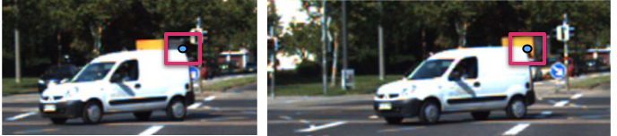
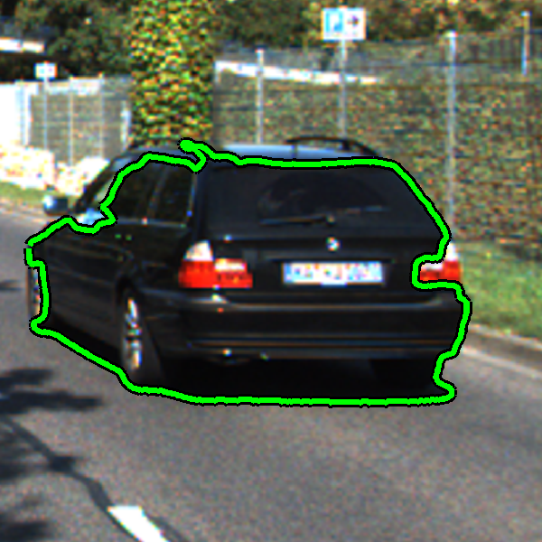
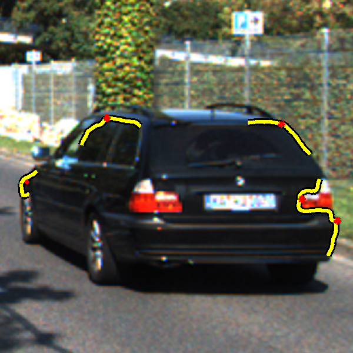

Feature Detection and Matching approaches perform reasonably in the interior of objects but they perform quite poorly on the object boundaries [1]. This can be attributed to two reasons. First, the detectors rely on fixed (scalable) image patches which may straddle object boundaries and depth discontinuities and a change in these can lead to a change in the detected object.
Second, even if a boundary point is detected at the same location w.r.t. one of the objects, matching is very difficult as the part in the patch belonging to the other object changes. (Figure 1).
 |
Figure 1. A car moving against a varying background. Nearly half of the patch centered on a Harris corner at the object boundary is part of the background. |
Level lines typically trace object boundaries and also often move with the object (Figure 2). By detecting corners on level lines that are stable, discriminative points can be found. We refer to such points as Corners on Maximally-stable Level Line Segments (CoMaL). Furthermore, this level line itself typically separates the object from the background at the boundaries and thus allows for more robust matching.
Several detectors have used level lines in the past, the most popular among them being the Maximally Stable Extremal Regions(MSER) detector [2]. However, MSER considers only small closed level lines and throws away the information in longer level lines in order to preserve the locality of a feature. Thus, it typically returns very few points and is not a popular choice for many other detection and matching applications where one needs to obtain a sufficient number of points.
 |
 |
Figure 2. (a) A long level line that forms the boundary of an object.
The information present along such level lines is discarded by MSER. | (b) A few corners (marked in red) detected as locally stable portions of the level lines. |